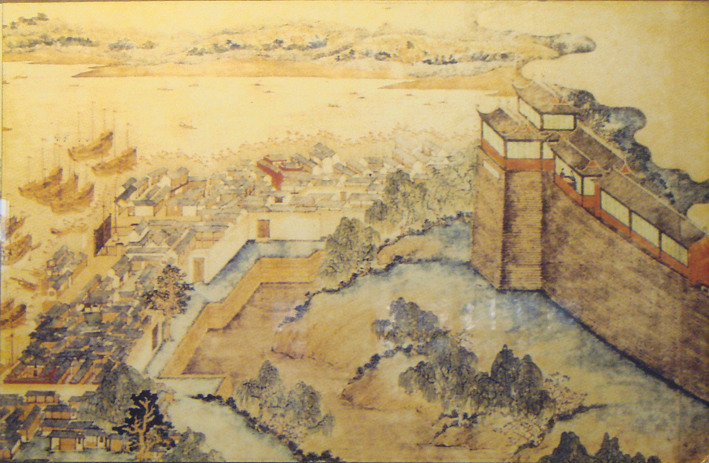
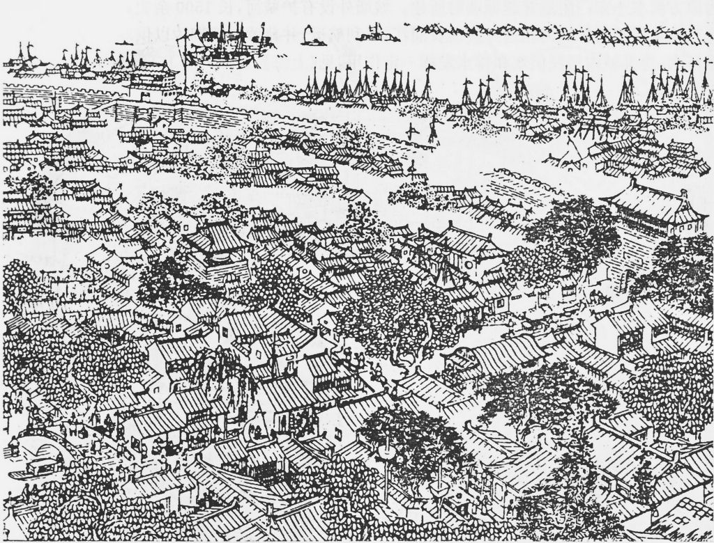
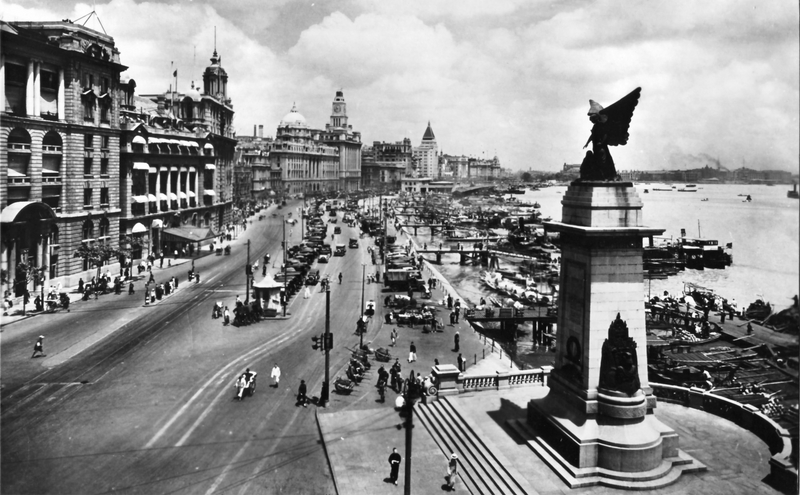
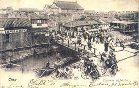

History

Shanghai Old Castle (17th century)
The land of Shanghai was a part of Huating County in the Tang dynasty, but a village called Shanghai Pha was established in the south of the Suzhou River, and it became known as Shanghai Town in the Song dynasty. On the other hand, there was also a Xiahai Temple near the current Hongkou District in the lower reaches of the Huangpo River. In the Yuan dynasty, the city ship boss was set up in Shanghai and began to develop as a port town.

Ming dynasty Shanghai landscape
The 1842 Treaty of Nanking, which ended the Opium War, opened Shanghai as a treaty port. With this as an opportunity, the Shanghai territory of England, France, the United States, etc. was formed, Japan also opened the territory, and Hongkou District was called "Small Tokyo". With the establishment of the Hongkong and Shanghai Banking Corporation in 1865, Western financial institutions promoted full-scale expansion into Shanghai.

Map of Shanghai in the Ming dynasty
In 1871, the Transatlantic Telegraph Company laid the submarine telegraph cable connecting Hong Kong-Shanghai-Nagasaki, Japan, and the Shanghai telegraph world was incorporated into the telegraph network earlier than Beijing, enabling international telegraph. In 1873, the Iwakura Mission of Japan stopped in Shanghai on the way back, and described the situation in Shanghai at that time in the "US-Europe Circular Report".

The Bund landscape (1928)
After the Sino-Japanese War, there was a general investment boom centered on foreign companies. The Treaty of Shimonoseki granted industrial enterprise rights to other countries and promoted factory construction. Russo-Chinese Bank opened a store in 1896. At the end of 1897, the Hongkong and Shanghai Banking Corporation's share price recorded a 176% premium. In 1899, the Bank of Indochina entered the market.

Old ramparts
Shanghai is loosely taxed on the high tax rates of British Hong Kong, and the tax world has been prepared, so the Jewish capital of Hong Kong has been completely transferred to Shanghai, and Sephardic Jewish groups such as the Sasun family are the first. It was at its peak after World War I.
SHANGHAI